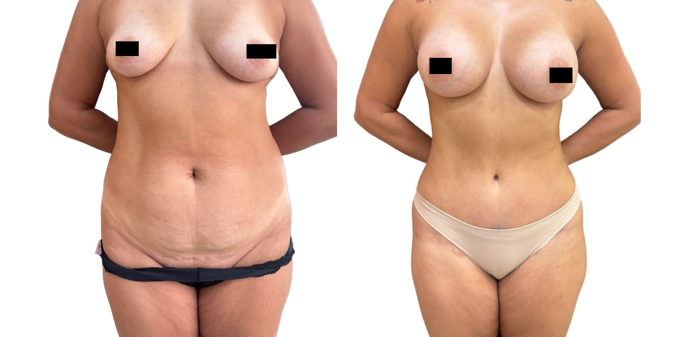
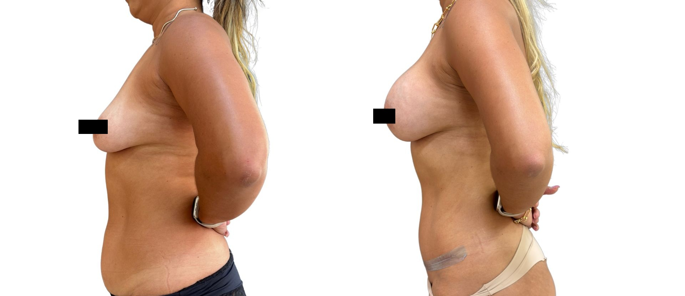

Excesso de pele
Avaliação das áreas com maior incômodo funcional ou estético.
Após grande perda de peso, o excesso de pele pode afetar abdome, braços, mamas e outras áreas. O planejamento define prioridades, tempo cirúrgico, nutrição, exames e recuperação.
Atendimento na Clínica LIV Faria Lima, em Pinheiros. Consulta presencial, teleconsulta em casos selecionados e preparo pré-operatório integrado quando indicado.

A avaliação considera áreas mais incômodas, estabilidade do peso, saúde geral, cicatrizes, nutrição e segurança para decidir o que tratar primeiro.
Avaliação das áreas com maior incômodo funcional ou estético.
Nem tudo precisa ou deve ser tratado em uma única cirurgia.
Exames, nutrição, peso estável e segurança são fundamentais.
A vontade de resolver várias áreas ao mesmo tempo é comum, mas segurança, tempo cirúrgico, exames, anemia, nutrição, recuperação e suporte em casa definem o que pode ser feito em cada etapa.
A prioridade depende de incômodo funcional, excesso de pele, segurança clínica, cicatrizes e recuperação possível.
Frequentemente envolve excesso de pele, flacidez e avaliação da parede abdominal.
Ver abdominoplastiaPodem exigir remodelação, redução, elevação ou associação conforme anatomia.
Ver mamaFlacidez de braços pode exigir braquioplastia quando a pele não retrai bem.
Ver braquioplastia
Na consulta são discutidas áreas prioritárias, exames, preparo clínico, riscos, cicatrizes, intervalos entre cirurgias e expectativas realistas.
Mapear áreas de maior incômodo e impacto funcional.
Avaliar nutrição, anemia, vitaminas e risco clínico.
Definir o que pode ser feito junto ou separado.
Planejar suporte, afastamento e acompanhamento.
Cirurgiã plástica, CRM-SP 191605 e RQE 110472, com formação pela UNICAMP, a Dra. Amanda avalia anatomia, pele, tecidos, cicatrizes, recuperação e segurança clínica. O plano é construído para responder à queixa da paciente com proporção, naturalidade e limites claros.
As consultas acontecem na Clínica LIV Faria Lima, em Pinheiros, próxima à Estação Pinheiros do metrô e com estacionamento pago no local. A jornada pode integrar consulta, exames, preparo clínico e avaliação cardiológica pré-operatória quando indicada.
Quando indicada, a avaliação cardiológica pré-operatória pode ser organizada na própria Clínica LIV com o Dr. Daniel Added, cardiologista formado pela USP e médico do InCor, CRM-SP 199104. Isso facilita exames, análise de risco e comunicação entre os profissionais envolvidos.
As fotos ajudam a ilustrar planejamento e cicatrização, mas cada resultado depende de anatomia, técnica, recuperação e cuidados pós-operatórios.

Imagem educativa e sem promessa de resultado individual.

Imagem educativa e sem promessa de resultado individual.

Imagem educativa e sem promessa de resultado individual.
Imagens autorizadas e tratadas para privacidade. Não representam garantia de resultado individual.
Abdome, braços, mamas e contorno corporal podem exigir abordagens diferentes. A consulta define sequência, técnica e intervalo entre etapas conforme segurança e impacto para a paciente.
Nos procedimentos cirúrgicos, o preparo inclui avaliação clínica, exames pré-operatórios e análise dos fatores de risco. Quando indicada, a avaliação cardiológica pré-operatória pode ser integrada à jornada na própria Clínica LIV com o Dr. Daniel Added, cardiologista formado pela USP e médico do InCor, CRM-SP 199104.
Geralmente quando o peso está mais estável, exames estão adequados e há queixas relevantes de excesso de pele, conforto, higiene ou proporção.
Nem sempre. Muitas vezes é mais seguro organizar por etapas, definindo prioridades e respeitando limites clínicos.
Abdome, mamas, braços, coxas e outras regiões podem ser avaliadas conforme queixa, excesso de pele e segurança.
Sim. Estado nutricional, anemia, proteínas e vitaminas influenciam cicatrização e segurança cirúrgica.
A prioridade depende do incômodo principal, impacto funcional, cicatrizes, recuperação e segurança clínica.
Ao enviar uma mensagem, a equipe entende o que você deseja avaliar, orienta o melhor formato de consulta e informa disponibilidade, valores, nota fiscal e próximos passos com discrição e clareza.
A equipe entende sua queixa, sua prioridade e o procedimento de interesse.
Você recebe informações sobre consulta presencial, teleconsulta inicial em casos selecionados, agenda e valores.
Na consulta, a Dra. Amanda avalia técnica, limites, segurança, recuperação e próximos passos.
Envie uma mensagem para contar sua história de perda de peso e receber orientação sobre consulta, disponibilidade, valores e próximos passos.